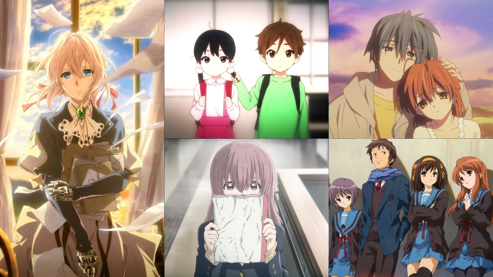

Kyoto animation
Kyoto animation
Kyoto Animation — известная японская студия, выпускающая аниме. Хотя, по сравнению с другими именитыми студиями, она выпустила сравнительно небольшое число собственных аниме, многие из них оказались весьма популярны. К их числу можно отнести AIR, Kanon, Clannad, «Меланхолия Харухи Судзумии», K-On! и др.
8 июля 2019 года из-за умышленного поджога в трёхэтажном здании студии № 1 произошёл сильный пожар. 41-летний Синдзи Аоба, ранее судимый за ограбление магазина, разлил на первом этаже студии керосин и поджёг его. В результате пожара погибло не менее 35 человек, ещё 36 были ранены, из них 9 находились в критическом состоянии. Трёхэтажному зданию, в котором располагается студия, был нанесён серьёзный ущерб. Пожар был потушен в течение пяти часов, больше всего пострадали второй и третий этажи. Всего на момент возгорания внутри находилось около 70 человек. Хидэаки Хатта сообщил, что пожар уничтожил все данные, которые готовились для будущих проектов Kyoto Animation. Также известно, что огнём был уничтожен архив студии, данные с сервера удалось восстановить без потерь.
За несколько недель до поджога на почту компании стали поступать анонимные угрозы. По словам главы студии Хидэаки Хатты, ему не было известно, связаны ли эти угрозы с поджогом, но он сообщал о них полиции и адвокатам. Всего за год перед поджогом компания заявляла о почти двухстах угрозах, поступавших, предположительно, от одного человека. В октябре 2018 года полиция Японии даже вводила временное патрулирование территории около штаб-квартиры, но никаких происшествий тогда зафиксировано не было.
Поджог стал одним из самых крупных массовых убийств в послевоенной истории Япониии самым смертоносным пожаром за последние восемнадцать лет. Профессор криминологии токийского университета Риссё назвал его «суицидальным терроризмом», так как нападавший рассчитывал после преступления покончить с собой.
Единственным подозреваемым является Синдзи Аоба, сорокаоднолетний японец, ордер на арест которого был выдан полицией вскоре после пожара. По имеющейся информации, Аоба страдал от психического расстройства и имел судимость. В 2012 году он совершил вооружённое ограбление магазина в префектуре Ибараки, за что был приговорён к трём с половиной годам заключения. Психическое заболевание Аобы может послужить смягчающим обстоятельством при выносе приговора в суде, заменив смертную казнь пожизненным заключением. Аоба сказал, что решил поджечь студию из-за того, что уличил её сотрудников в плагиате: в рукописи, которую он подавал на Kyoto Animation Award, содержалась сцена покупки мяса с почти истекшим сроком годности по сниженной цене, и он увидел, как в 5 серии аниме Tsurune, которая транслировалась по телевидению в ноябре 2018 года, главные герои делают то же самое. 5 сентября 2023 года, в первый день суда, Аоба признал себя виновным в поджоге.
Спустя полгода, 25 января 2024 года, 45-летний Синдзи Аоба за умышленное убийство 36 человек был приговорён к смертной казни. На данный момент он ожидает исполнения наказания.
После поджога часть сотрудников, пострадавших в происшествии, вернулась на работу, часть — ушла из индустрии. Наоко Ямада перешла в Science SARU. За день до трагедии студия успела закончить фильм «Вайолет Эвергарден: Вечность и призрак пера», который вышел в прокат 6 сентября, и не на две недели, как планировалось изначально, а на четыре обязательного проката, причём некоторые кинотеатры продолжали прокат и после в поддержку студии, и даже показывали её предыдущие фильмы. Многие последующие проекты были сильно сдвинуты в сроках. Студия закрыла блог на своём сайте, до поджога обновлявшийся почти каждый день силами рядовых работников-аниматоров (восстановлен 1 сентября 2020 года). На данный момент студия работает в обычном режиме.